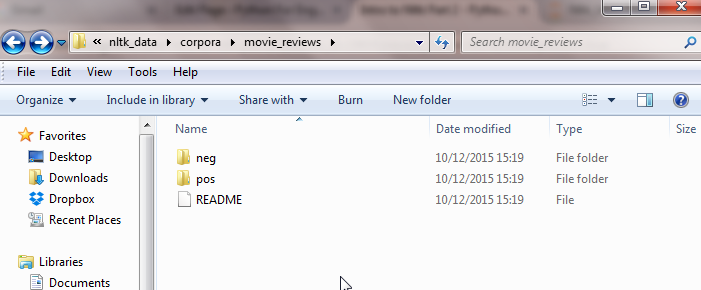
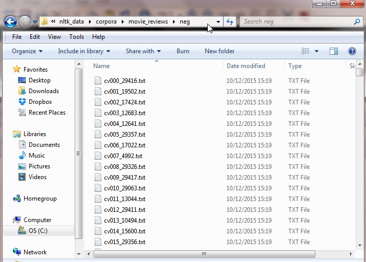

Intro to Nltk Part 2

0. Introduction to NLP and Sentiment Analysis
1. Natural Language Processing with NTLK
3. Build a sentiment analysis program
4. Sentiment Analysis with Twitter
5. Analysing the Enron Email Corpus
6. Build a Spam Filter using the Enron Corpus
We will go over topics like stopwords and the movie reviews corpus.
Only interested in videos? Go here for next video. Build a sentiment analysis program:
Let’s import the functions we need:
import nltk.classify.util
from nltk.classify import NaiveBayesClassifier
from nltk.corpus import movie_reviews
from nltk.corpus import stopwords
from nltk.tokenize import word_tokenize
from nltk.corpus import wordnet
The first concept we want to learn is stop words. There are several words in English (and other languages) that carry little or no meaning, but are really common. Words like the, a, I, is etc. When doing language processing, we want to get rid of these words, as they take up a large part of any sentence, without adding any context or info.
Nltk comes inbuilt with a list of stop words for all main languages. To see the stop words for English:
stopwords.words('english')[:16]
['i',
'me',
'my',
'myself',
'we',
'our',
'ours',
'ourselves',
'you',
'your',
'yours',
'yourself',
'yourselves',
'he',
'him',
'his']
NOTE: We are only printing the first 16 stop words.
To see how to use this, we are going to see an example. I am taking a paragraph from https://en.wikipedia.org/wiki/Cadet_Nurse_Corps.
In the code, I use the full para. Here, I’ll print one sentence, as it’s enough to prove my point.
para = "The program was open to all women between the ages of 17 and 35, in good health,
who had graduated from an accredited high school. "
words = word_tokenize(para)
print(words)
['The', 'program', 'was', 'open', 'to', 'all', 'women', 'between', 'the', 'ages', 'of', '17', 'and', '35', ',', 'in', 'good', 'health', ',',
'who', 'had', 'graduated', 'from', 'an', 'accredited', 'high', 'school', '.']
These are the words of one sentence. Let’s see if we can remove the stop words:
useful_words = [word for word in words if word not in stopwords.words('english')]
print(useful_words)
['The', 'program', 'open', 'women', 'ages', '17', '35', ',', 'good', 'health',
',', 'graduated', 'accredited', 'high', 'school', '.']
We use list comprehension to remove all words in the stopwords list. You see we got rid of words like was to all etc.
A much smaller list (which means less processing), which nevertheless contains all the keywords.
Movie review corpus
Next, we will look at movie reviews. When you downloaded the extra data in the previous lesson, it included a lot of free texts for analysis. Movie reviews, Twitter data, works from Shakespeare.
On Windows, it is in C:\Users\
If you open the movie_reviews folder, you will see there are neg and pos folders. neg contains negative reviews, pos positive.

There are hundreds of files in each folder, each containing the review of one person. We will use these for machine learning in the next lesson.

Now, the great thing about the nltk corpora is, you don’t need to manually read the files, parse the data extra. Ntlk provides you with ready made functions to do so, saving our time to do more useful analysis.
We already imported movie_reviews up there. To remind you:
from nltk.corpus import movie_reviews
We can just start using the data. To see all the words in all the reviews:
movie_reviews.words()
['plot', ':', 'two', 'teen', 'couples', 'go', 'to', ...]
Of course, there are too many words, and only a few are printed. You can look at the first negative review text file, and see the words above are taken from there.
You can see the categories:
movie_reviews.categories()
['neg', 'pos']
You can see the list of files. For example, to see the 1st four files:
movie_reviews.fileids()[:4]
['neg/cv000_29416.txt',
'neg/cv001_19502.txt',
'neg/cv002_17424.txt',
'neg/cv003_12683.txt']
We can create a frequency distribution of the words, which will allow us to see which words are the most common in our reviews:
all_words = movie_reviews.words()
freq_dist = nltk.FreqDist(all_words)
freq_dist.most_common(20)
[(',', 77717),
('the', 76529),
('.', 65876),
('a', 38106),
('and', 35576),
('of', 34123),
('to', 31937),
("'", 30585),
('is', 25195),
('in', 21822),
('s', 18513),
('"', 17612),
('it', 16107),
('that', 15924),
('-', 15595),
(')', 11781),
('(', 11664),
('as', 11378),
('with', 10792),
('for', 9961)]
Most of these words are stop words. When we build our sentiment analysis program, we’ll have to get rid of them.
We now have all the tools needed to write some code that will perform sentiment analysis on the movie reviews. Let’s do that now.